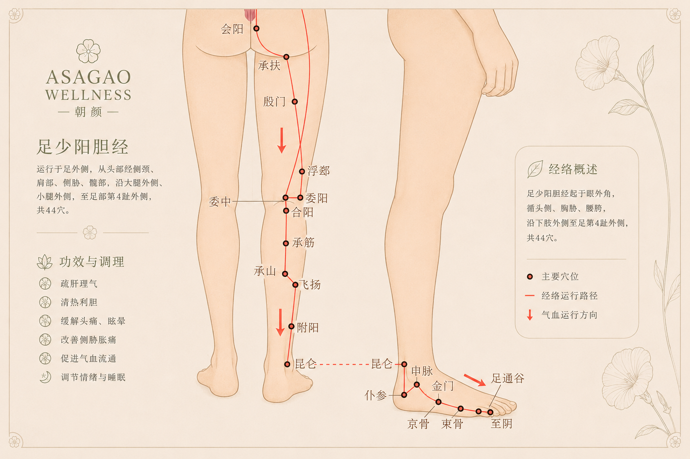
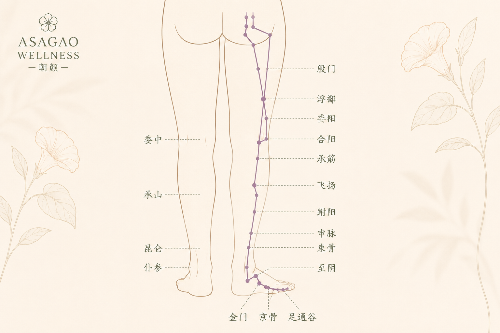
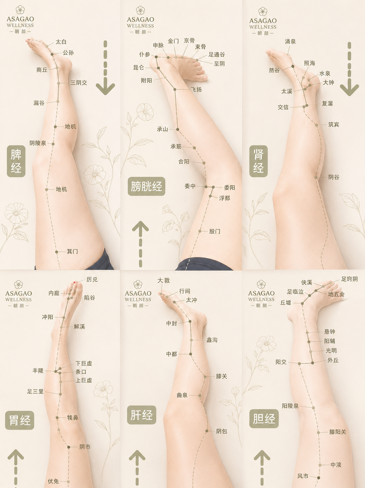
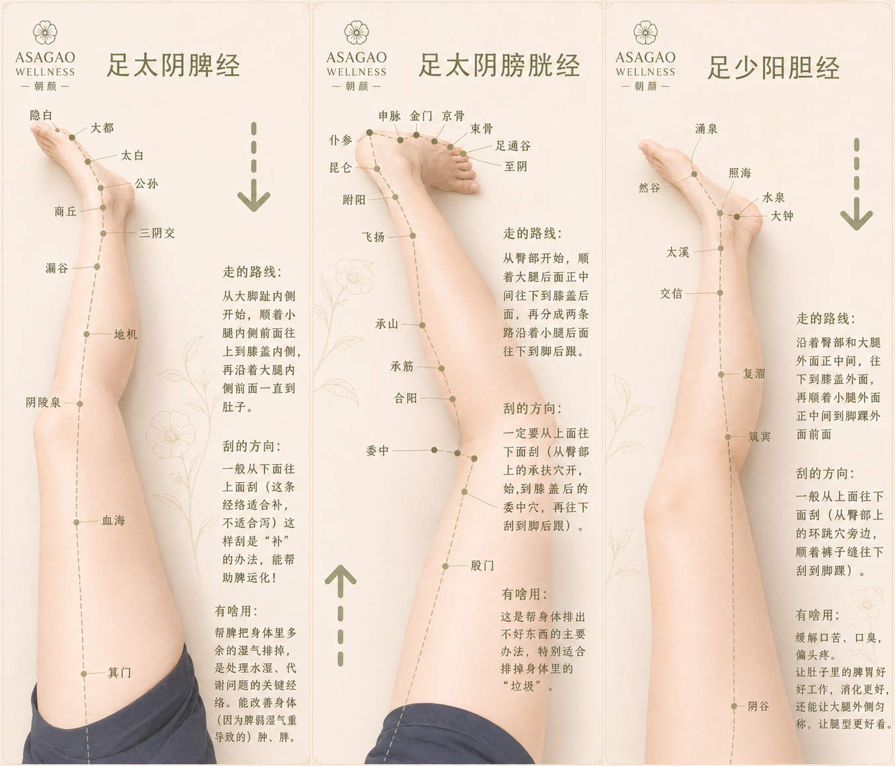
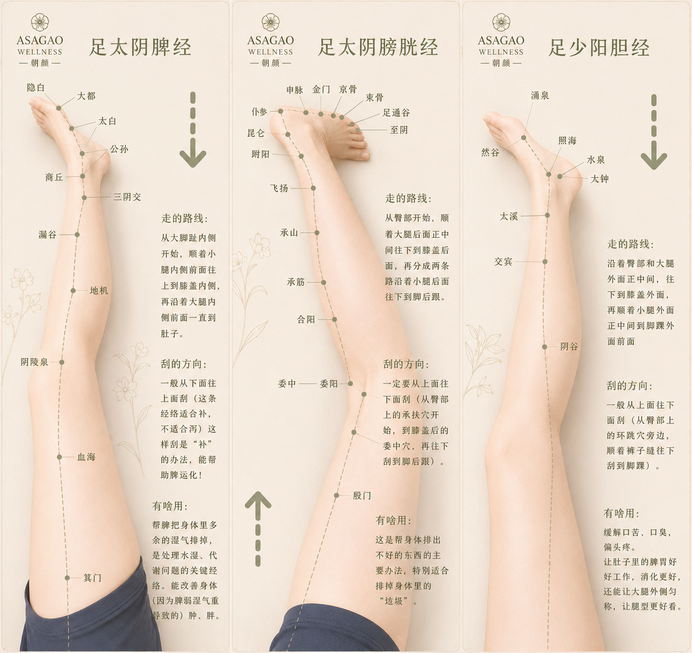

A restorative posterior-leg treatment designed to release deep muscular tension,
improve lower-body mobility,
and support grounded physical recovery through slow therapeutic touch.
Inspired by Eastern meridian philosophy and quiet luxury wellness,
the Back Leg Therapy focuses on the hamstrings,
calves,
gluteal connections,
and posterior fascial chains,
supporting circulation,
structural balance,
nervous system relaxation,
and whole-body ease.

Posterior meridian pathways · Hamstrings · Grounded mobility · Deep release

ASAGAO WELLNESS · Quiet luxury therapeutic leg care

Back legs · Fascia flow · Recovery · Restorative movement

Spleen meridian · Posterior leg support · Grounding recovery

Bladder meridian · Hamstrings · Calves · Restorative flow

Gallbladder meridian · Lateral leg balance · Mobility support